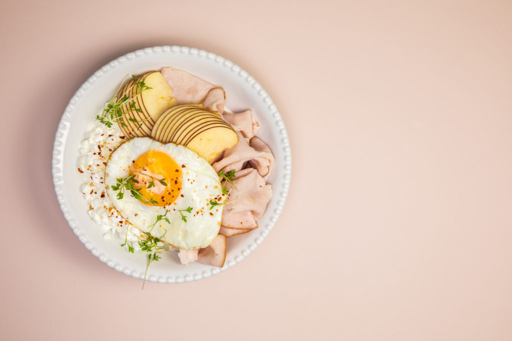

Protein Smoothie
Whey
Protein Bowl
Protein Smoothie
Description
Perfect recipe for when you need to up those proteins!
Ingredients
1 frozen banana
115g canned black beans
1 tbsp cocoa powder
30g protein powder (I used salted caramel taste)
100g
Whey
200g skimmed milk
a sprinkle of salt
Steps
Put the frozen banana in a blender
Strain the liquid from the beans
Add the rest of the ingredients
Depending on your blender, you might want to wait 5-10 minutes for the banana to thaw a bit.
Blend it until it's smooth
Serve with a big straw and enjoy!
 Whey
Whey